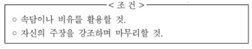

지문 보기(문제4~문제7)

7. <조건>을 바탕으로 (나)의 끝부분에 한 문단을 추가한다고 할 때, 그 내용으로 가장 적절한 것은?
1. 손바닥 뒤집듯이 기존의 선거 방식을 바꾸는 것은 바람직하지 않습니다. 학생회장 선거의 시기 변경은 또 다른 문제를 야기 할 수 있음을 명심해야 합니다.
2. 현재의 학생회장 선거 시기가 지닌 여러 문제점을 제대로 인식해야 합니다. 보다 나은 학생회를 만들기 위해서 학생회장 선거 시기를 지금 당장 바꾸어야 합니다.
3. 쇠뿔도 단김에 빼야 하듯이 문제점을 인식한 이 시점이 학생 회장 선거 시기를 바꿀 적절한 기회입니다. 그래서 이번 기회에 학생회장 선거 시기를 반드시 바꾸어야 합니다.
4. 백지장도 맞들면 낫듯이 우리 모두가 힘을 모으면 학생회장 선거 시기를 바꿀 수 있습니다. 그런 다음에 더 중요한 학생회 임원 구성의 문제를 해결할 방안을 강구해야 합니다.
5. 선거 시기의 변경으로 전후 학생회 간에 알력이 생길 수 있습니다. 따라서 학생회장 선거 시기 변경보다는 학생회의 자율성과 적극성을 높이기 위한 새로운 방안을 모색해야 합니다.